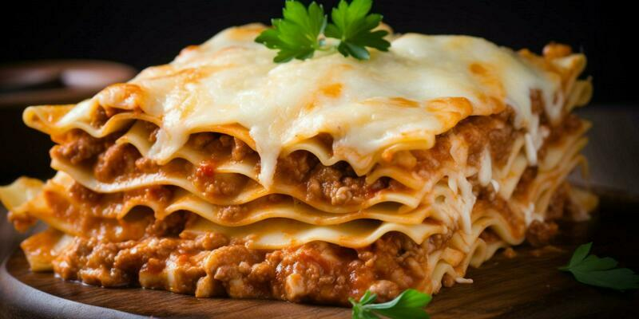

Lasagne Recipe

In this Lasagna with Cottage Cheese, supple sheets of fresh lasagna noodles are layered with a meaty, deeply savory sauce and a rich cottage cheese and pecorino Romano filling then topped with a generous layer of creamy mozzarella cheese.
ingredients
- Fresh Lasagna Noodles: store-bought or homemade (If you want to make your own, I recommend these easy Homemade Lasagna Noodles made with 5-minute food processor pasta dough.)
- Olive Oil: ideally extra-virgin olive oil
- Onions: red onions for their mild sweetness and color
- Garlic: fresh garlic cloves
- Pancetta: or bacon
- Tomatoes: canned, crushed tomatoes with juice
Steps:
- It starts with fresh lasagna noodles. You can buy them at the grocery store or easily make homemade lasagna noodles with my food processor pasta dough recipe (make the dough with 4 ingredients in 5 minutes flat) and a crank pasta machine. You don't need to pre-boil these, and they absorb the sauce flavors beautifully.
- Then you'll alternate layers of rich, meaty sauce, with pancetta ground beef and Italian sausage, silky, fresh lasagna noodles, and a creamy blend of cottage cheese, pecorino Romano and mozzarella cheese.
- A final layer of melted mozzarella brings the dish home